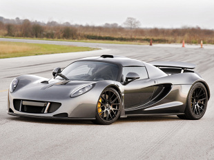
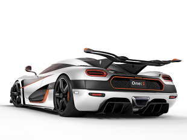
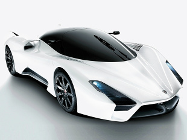
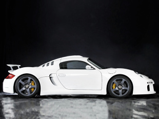
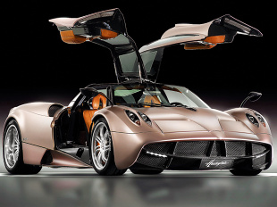

NAJDROŻSZE ORAZ NAJSZYBSZE SAMOCHODY
Miejsce 1 - 435 km/h
Hennessey Venom GT
Venom ma amerykański 7-litrowy silnik V8 typu LSX opracowany przez General Motors, ale montaż końcowy odbywa się w Wielkiej Brytanii. Księga Guinnessa nie uznaje jego rekordu z dwóch powodów: nie zbudowano 30 sztuk, a prędkość 435,31 km/h osiągnął w trakcie tylko jednego przejazdu. Jednak dla tych, którzy nie są drobiazgowi, Hennessey jest najszybszy na świecie.

Miejsce 2 - 431 km/h
Bugatti Veyron SuperSport
Według Księgi Rekordów Guinnessa najszybszym, seryjnym samochodem jest Veyron. On również miał problem z oficjalnym potwierdzeniem swojego rekordu. Tym razem wątpliwości wzbudziło usunięcie ogranicznika prędkości. Dopiero po tym zabiegu Bugatti rozpędziło się do 431,072 km/h.

Miejsce 3 - 430 km/h
Koenigsegg Agera One:1
Podejrzewanie Szwedów o produkcję demona prędkości graniczy z wiarą w abstynencję Rosjan. Supersamochód z kraju, gdzie dobrym zwyczajem jest zawiadamiać policję o kierowcach przekraczających prędkość? Jednak Agera R z zimną perfekcją rozpędza się do 430 km/h. Ma 5-litrowy silnik V8.

Miejsce 4 - 430 km/h
SSC Tuatara
Amerykańska Tuatara ma aluminiowy, 7-litrowy V8, ale potrzebuje o 150 KM więcej, aby być o 5 km/h wolniejsza od Venoma GT. Silnik SSC osiąga 1350 KM przy 6800 obr./min. Po usunięciu osprzętu ograniczającego emisję spalin, wóz osiąga 1700 KM, a producent zapewnia, że jest w stanie rozpędzić się do 444 km/h. Wynik nie został jednak potwierdzony.

Miejsce 5 - 409 km/h
9ff GT9
Firma tuningowa 9ff z Dortmundu wprawdzie zbankrutowała, ale tylko po to, aby w 2013 odrodzić się pod nowym szyldem. Jej najszybszym modelem jest GT9, który wg 9ff osiąga 437 km/h. Rozpędzenie się do 300 km/h zajmuje mu 13 sekund.

Miejsce 6 - 380 km/h
RUF CTR3
Niepozorny, wyposażony w sześciocylindrowego „boksera” i podwozie Porsche bardziej brzmi niż wygląda. Jednak tym większa niespodzianka dla każdego, kto spróbuje „objechać” RUF-a budowanego w bawarskim miasteczku Pfaffenhausen.

Miejsce 7 - 375 km/h
Zenvo ST1
Na stronie Zenovo dociekliwi znajdą wielkość prześwitu, przestrzeni nad głową czy emisji tlenków azotu, charakteryzującą model ST1. Wśród tych danych jest ciurkiem wymieniona ograniczona elektronicznie, ale i tak imponująca prędkość maksymalna oraz czas rozpędzania. Duńczycy wykazali się podziwu godną skromnością.
Miejsce 8 - 372 km/h
Pagani Huayra
Występ w filmie „Transformers: Wiek zagłady” ugruntował jego pozycję w galerii supersamochodów. Wywalczył ją rzetelnie już wcześniej za pomocą widlastego, 12-cylindrowego silnika AMG-Mercedes o mocy 730 KM oraz doskonale z nim współgrającej 7-biegowej skrzyni sekwencyjnej. Najszybszy „włoch” w naszym rankingu.

Miejsce 9 - 362 km/h
Noble M600
Nobliwy „brytyjczyk”, który zadebiutował w 2010 r. w Goodwood ma silnik V8 z Volvo XC90, lecz o ileż lepszy użytek z niego robi! Kierowca może ustawić widlastą „ósemkę” na jednym z trzech poziomów mocy. Najwyższy to 650 KM.

Miejsce 10 - 350 km/h
Ferrari LaFerrari
Wśród oznak nadchodzącego końca świata Apokalipsa św. Jana nie wymienia hybrydowego Ferrari, ale może część tekstu została zagubiona. LaFerrari jest nie tylko najszybsze w obecnej gamie firmy, ale w dodatku hybrydowe. Do 800 KM szlachetnego V12 następne 163 dodaje system odzyskiwania energii hamowania.